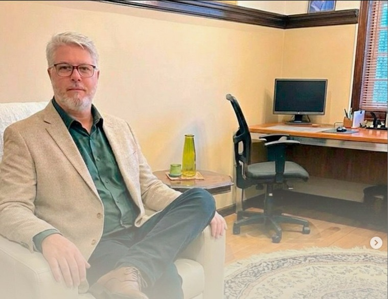

Psicoterapia individual
Atendimento psicológico de orientação psicanalítica, presencial na região central de Curitiba ou online. Um trabalho conduzido com calma, sigilo e respeito ao tempo de cada pessoa.

Apresentação profissional
Sou psicólogo clínico de orientação psicanalítica, com especializações em Gestalt-terapia e em Psicossociologia do idoso e das relações humanas. Recebo pessoas em diferentes momentos da vida, com escuta atenta às questões próprias de cada fase — da juventude à velhice.
O trabalho pode ser realizado de forma presencial, em consultório na região central de Curitiba, ou por atendimento online, mantendo o mesmo cuidado e continuidade do processo terapêutico.
Atendo
Biografia e formação acadêmica
Serviços oferecidos
Duas formas de acompanhamento, com a mesma qualidade de escuta.
Consultório localizado na região central de Curitiba. Indicado para quem prefere o encontro físico como parte do processo terapêutico.
Sessões por videochamada, com a mesma regularidade e sigilo do atendimento presencial. Indicado para quem está fora de Curitiba ou prefere a comodidade de casa.
Primeiro contato
Antes de falar diretamente com o Dr. Alexandre, o Ôjas Bot faz uma breve triagem para entender sua necessidade e já encaminha o agendamento.
O Ôjas Bot é um modelo de inteligência artificial e pode cometer erros. Fique à vontade para relatar seu feedback ao responsável técnico pelo WhatsApp.
Contato
Prefere não passar pela triagem agora? Você pode chamar diretamente pelos canais abaixo.
Atendimento presencial na região central de Curitiba · Atendimento online para todo o Brasil.